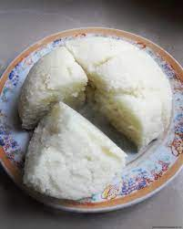

A plate of ugali
Ingredients
- 1 cup of Maize meal or corn meal
- 2 cups of normal water
Instructions
- Heat water over medium heat in a deep pan
- Make sure the water comes to boil
- Add the maize meal and keep stirring with a strong wooden spoon
- Keep mixing the mixture as you add more flour until it becomes more thick while breaking the lumps
- When the mixture begins to come away from the pan,allow it to cook for 2-3 minutes
- Transfer the ugali to a platter and turn it upside down
- Enjoy pipping the hot ugali with your favourite stew
Return to top